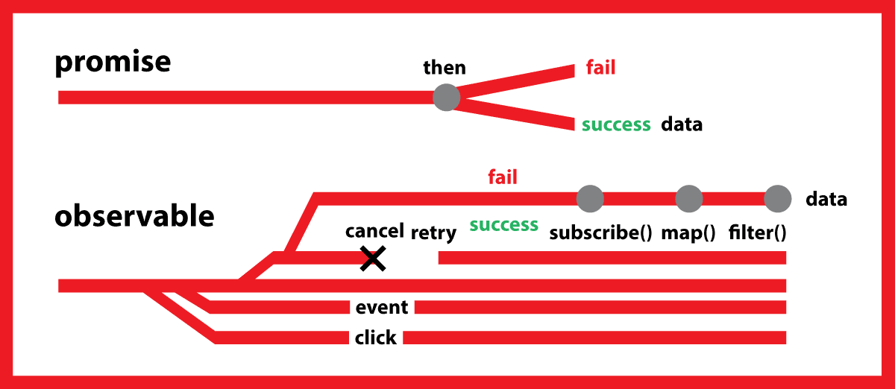
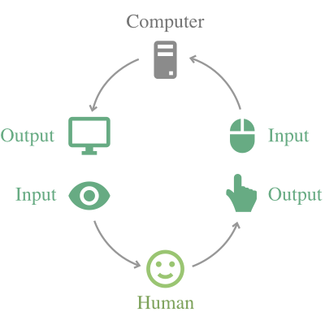
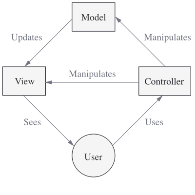

Table of Contents
1 Cycle.js
1.1 cycle.js overview
Multiple state streams => merged/combine into single state stream => vdom stream => diff
- Observalbe
- VDOM
- MVI
- isolate
- driver
- run
1.2 Observalbe (Rx.js)
Think of RxJS as Lodash for events
1.2.1 Demo
1.2.2 Rxjs essential concepts (基本概念)
- Observable: represents the idea of an invokable collection of future values or events.
- Observer: is a collection of callbacks that knows how to listen to values delivered by the Observable.
- Subscription: represents the execution of an Observable, is primarily useful for cancelling the execution.
- Operators: are pure functions that enable a functional programming style of dealing with collections with operations like map, filter, concat, flatMap, etc.
- Subject: is the equivalent to an EventEmitter, and the only way of multicasting a value or event to multiple Observers.
- Schedulers: are centralized dispatchers to control concurrency, allowing us to coordinate when computation happens on e.g. setTimeout or requestAnimationFrame or others.
1.2.3 Push vs Pull
Pull and Push are two different protocols how a data Producer can communicate with a data Consumer
| Producer | Consumer | |
|---|---|---|
| Pull | Passive: produces data when requested | Active: decides when data is requested |
| Push | Active: produces data at its own pace | Passive: reacts to received data |
Observable is a push system
1.2.4 Observable
Observables are lazy Push collections of multiple values
- Observable can be multicast or unicast
- Observables are able to deliver values either synchronously or asynchronously
observable async and sync
const Rx = require('rxjs'); const observable = Rx.Observable.create(function(observer) { observer.next(1); observer.next(2); observer.next(3); setTimeout(() => { observer.next(4); observer.complete(); }, 1000); }); observable.subscribe({ next: x => console.log('got value ' + x), error: err => console.error('something wrong occurred: ' + err), complete: () => console.log('done'), }) console.log('before'); console.log('after');
observable use async schedulers
const Rx = require('rxjs'); const observable = Rx.Observable.create(function(observer) { observer.next(1); observer.next(2); observer.next(3); setTimeout(() => { observer.next(4); observer.complete(); }, 1000); }).observeOn(Rx.Scheduler.async); console.log('before'); observable.subscribe({ next: x => console.log('got value ' + x), error: err => console.error('something wrong occurred: ' + err), complete: () => console.log('done'), }) console.log('after');
- Observable may be hot or cold
- cold
const Rx = require('rxjs'); const observable = Rx.Observable.create(function(observer) { observer.next(1); observer.next(2); setTimeout(() => { observer.next(3); }, 500) }); observable.subscribe({ next: (r) => console.log('a:' + r), }); observable.subscribe({ next: (r) => console.log('b:' + r), });
- hot
Rx.Observable.share: Returns a new Observable that multicasts (shares) the original Observable. As long as there is at least one Subscriber this Observable will be subscribed and emitting data. When all subscribers have unsubscribed it will unsubscribe from the source Observable. Because the Observable is multicasting it makes the stream hot. This is an alias for .publish().refCount().
const Rx = require('rxjs'); const observable = Rx.Observable.create(function(observer) { observer.next(1); observer.next(2); setTimeout(() => { observer.next(3); }, 500) }).share(); observable.subscribe({ next: (r) => console.log('a:' + r) }) setTimeout(() => { observable.subscribe({ next: (r) => console.log('b:' + r) }) }, 100);
- hot observable and subject
const Rx = require('rxjs'); const subject = new Rx.Subject(); const cold = Rx.Observable.create(function(observer) { observer.next(1); observer.next(2); setTimeout(() => { observer.next(3); }, 500) }).share(); const hot = cold.multicast(subject); hot.subscribe({ next: (r) => console.log('a:' + r) }) hot.connect(); setTimeout(() => { hot.subscribe({ next: (r) => console.log('b:' + r) }) }, 100);
- cold
- 常见的几种JS对象对比
- Function: a lazily evaluated computation that synchronously returns a single value on invocation.
- Generator: a lazily evaluated computation that synchronously returns zero to (potentially) infinite values on iteration.
- Promise: a computation that may (or may not) eventually return a single value.
- Observable a lazily evaluated computation that can synchronously or asynchronously return zero to (potentially) infinite values from the time it's invoked onwards.
lazy values async/sync Function true 0 / single sync Generator true 0 ~ infinite sync (代码执行顺序) Promise false 0 / single async Observable true 0 ~ infinite async
1.2.5 observable VS promise stackoverflow
| observable | promise |
|---|---|
| like a stream | only once |
| async or sync | async |
| lazy | not lazy |
| cancellable | cancellable only in some thirdpart package |
| retriable |

1.2.6 Observer
An Observer is a consumer of values delivered by an Observable Observers are just objects with three callbacks, one for each type of notification that an Observable may deliver
three callbacks:
- next
- error
- complete
1.2.7 Subscription
A Subscription essentially just has an unsubscribe() function to release resources or cancel Observable executions
const observable = Rx.Observable.interval(1000); const subscription = observable.subscribe(x => console.log(x)); // Later: // This cancels the ongoing Observable execution which // was started by calling subscribe with an Observer. subscription.unsubscribe();
1.2.8 Subject
A Subject is like an Observable, but can multicast to many Observers. Subjects are like EventEmitters: they maintain a registry of many listeners Every Subject is an Observable Every Subject is an Observer
- subject multicast
- difference between subject and observable
const Rx = require('rxjs'); var observable = Rx.Observable.create(function(observer) { observer.next(Math.random()); }); observable.subscribe(v => console.log('consumer A: ' + v)); observable.subscribe(v => console.log('consumer B: ' + v));
const Rx = require('rxjs'); var observable = Rx.Observable.create(function(observer) { observer.next(Math.random()); }); const subject = new Rx.Subject(); // subject is an observable subject.subscribe(v => console.log('consumer A: ' + v)); subject.subscribe(v => console.log('consumer B: ' + v)); // subject is an observer observable.subscribe(subject);
- Multicasted Observables
A multicasted Observable uses a Subject under the hood to make multiple Observers see the same Observable execution
const Rx = require('rxjs'); var source = Rx.Observable.from([1, 2, 3]); var subject = new Rx.Subject(); var multicasted = source.multicast(subject); // These are, under the hood, `subject.subscribe({...})`: multicasted.subscribe({ next: (v) => console.log('observerA: ' + v) }); multicasted.subscribe({ next: (v) => console.log('observerB: ' + v) }); // This is, under the hood, `source.subscribe(subject)`: // 注意 connect 调用 multicasted.connect();
- Reference counting / refCount <===> understand with hot/cold observable
解决multicasted observables start and stop executing
- connect 函数 The connect() method is important to determine exactly when the shared Observable execution will start
- refCount 函数 refCount makes the multicasted Observable automatically start executing when the first subscriber arrives, and stop executing when the last subscriber leaves.
- BehaviorSubject
BehaviorSubjects are useful for representing "values over time". For instance, an event stream of birthdays is a Subject, but the stream of a person's age would be a BehaviorSubject.
const Rx = require('rxjs'); var subject = new Rx.BehaviorSubject(0); // 0 is the initial value subject.subscribe({ next: (v) => console.log('A: ' + v) }); subject.next(1); subject.next(2); // notice: 在最新subject.next之前，获取到了之前的最新数据 subject.subscribe({ next: (v) => console.log('observerB: ' + v) }); subject.next(3);
- ReplaySubject
A ReplaySubject records multiple values from the Observable execution and replays them to new subscribers. 记住最近的若干次next值
const Rx = require('rxjs'); var subject = new Rx.ReplaySubject(3); // buffer 3 values for new subscribers subject.subscribe({ next: (v) => console.log('A: ' + v) }); subject.next(1); subject.next(2); subject.next(3); subject.next(4); subject.subscribe({ next: (v) => console.log('observerB: ' + v) }); subject.next(5);
- AsyncSubject
The AsyncSubject is a variant where only the last value of the Observable execution is sent to its observers, and only when the execution completes. 仅当subject complete时，将最终结果发送给observer
const Rx = require('rxjs'); var subject = new Rx.AsyncSubject(); subject.subscribe({ next: (v) => console.log('A: ' + v) }); subject.next(1); subject.next(2); subject.next(3); subject.next(4); subject.subscribe({ next: (v) => console.log('observerB: ' + v) }); subject.next(5); subject.complete();
1.2.9 Operators
An Operator is a function which creates a new Observable based on the current Observable. This is a pure operation: the previous Observable stays unmodified.
like .map(…), .filter(…), .merge(…)
1.2.10 Scheduler
A scheduler controls when a subscription starts and when notifications are delivered
- all Observable operators that deal with concurrency have optional schedulers
- Static creation operators usually take a Scheduler as argument
If you do not provide the scheduler, RxJS will pick a default scheduler by using the principle of least concurrency (最少并发原则)
const Rx = require('rxjs'); console.log('sync start'); Rx.Observable .from([1, 2, 3]) .subscribe({ next: (v) => console.log(v) }) console.log('sync end'); console.log('----------------'); console.log('async start'); Rx.Observable .from([1, 2, 3], Rx.Scheduler.async) .subscribe({ next: (v) => console.log(v) }) console.log('async end')
1.2.11 相关阅读
1.3 VDOM => snabbdom
1.4 a simple cycle example
1.5 Cycle
1.5.1 inputs/outputs
灵感来源

Similarity with Haskell 1.0 Stream-based I/O:
type Dialogue = [Response] -> [Request]
the model of interaction with the Operating System
- [Response] is a stream (lazy potentially-infinite list, to be more accurate) of messages from the OS
- [Request] is a stream of messages to the OS.
1.5.2 MVI
- Reactive programming:
In computing, reactive programming is an asynchronous programming paradigm concerned with data streams and the propagation of change
Reactivity is an important aspect in Cycle.js
- MVC

The Controller in MVC is incompatible with our reactive ideals, because it is a proactive component (implying either passive Model or passive View).
Trygve Reenskaug, inventor of MVC: The essential purpose of MVC is to bridge the gap between the human user’s mental model and the digital model that exists in the computer.
- MVI
- intent() function
- Purpose: interpret DOM events as user’s intended actions
- Input: DOM source
- Output: Action Streams
- model() function
- Purpose: manage state
- Input: Action Streams
- Output: State Stream
- view() function
- Purpose: visually represent state from the Model
- Input: State Stream
- Output: Stream of Virtual DOM nodes as the DOM Driver sink
Model-View-Intent (MVI) is reactive, functional, and follows the core idea in MVC.
- intent() function
1.5.3 CSS selectors
1.5.5 Driver
Drivers are functions that listen to sink streams (their input), perform imperative side effects, and may return source streams (their output)
sources => main => sinks => Driver => sources
- input / output
input: expected to be a single xstream stream output: be a single stream or a queryable collection of streams (A queryable collection of streams is essentially a JavaScript object with a function used to choose a particular stream based on a parameter, e.g. get(param).)
- read only / write only
相对于main函数
read only => driver 返回soruces 但不依赖main任意sinks write only => driver 只接受 sinks 不返回 sources
- 编写driver的时候使用xstream
- 多stream库兼容
使用@cycle/run/lib/adapt
- Demo
import {adapt} from '@cycle/run/lib/adapt'; function makeSockDriver(peerId) { let sock = new Sock(peerId); function sockDriver(outgoing$) { outgoing$.addListener({ next: outgoing => { sock.send(outgoing); }, error: () => {}, complete: () => {}, }); const incoming$ = xs.create({ start: listener => { sock.onReceive(function (msg) { listener.next(msg); }); }, stop: () => {}, }); return adapt(incoming$); } return sockDriver; }
1.5.6 rxjs/run
function replicateMany(sinks, sinkProxies) { const sinkNames: Array = Object.keys(sinks).filter( name => !!sinkProxies[name], ); let buffers = {}; const replicators = {}; // subscribe sinkNames.forEach(name => { buffers[name] = {_n: [], _e: []}; replicators[name] = { next: (x) => buffers[name]._n.push(x), error: (err) => buffers[name]._e.push(err), complete: () => {}, }; }); /* 缓存 buffers { a: { _n: [], _e: [] } } replicators { a: { next: fn push to buffers, error: fn push to buffers, complete: fn } } */ const subscriptions = sinkNames.map(name => xs.fromObservable(sinks[name]).subscribe(replicators[name]), ); sinkNames.forEach(name => { // sinkProxies here // call sinkProxies 对应的 next, error 函数 const listener = sinkProxies[name]; const next = (x) => { listener._n(x); }; const error = (err: any) => { logToConsoleError(err); listener._e(err); }; // buffers 中的现有数据调用 buffers[name]._n.forEach(next); buffers[name]._e.forEach(error); // 将replicators中的 next, error 替换成 sinkProxies的消费函数 replicators[name].next = next; replicators[name].error = error; // because sink.subscribe(replicator) had mutated replicator to add // _n, _e, _c, we must also update these: replicators[name]._n = next; replicators[name]._e = error; }); buffers = null; // free up for GC return function disposeReplication() { subscriptions.forEach(s => s.unsubscribe()); // sinkProxies here sinkNames.forEach(name => sinkProxies[name]._c()); }; } export function setup(main, drivers) { /* drivers => create sources => main(sources) */ const sinkProxies = makeSinkProxies(drivers); const sources = callDrivers(drivers, sinkProxies); const adaptedSources = adaptSources(sources); const sinks = main(adaptedSources); function _run() { const disposeReplication = replicateMany(sinks, sinkProxies); return function dispose() { disposeSources(sources); disposeReplication(); }; } /* * example: * sources => { A: stream, B: stream } * drivers => { a: fn => stream, b: fn => stream } * * sinkProxies => { a: xs.createWithMemory(), b: xs.createWithMemory() } * * in callDrivers fn: * dirvers[name](sinkProxies[name], name) * drivers[name]._isCycleSource = name * * @return * {a: stream, b: stream} * * adaptedSources => { a: stream => stream, b: stream => stream } * * sinks fn: * main({a: stream, b: stream}) * * replicateMany fn: * * * */ return {sinks, sources, run: _run}; }
1.5.7 isolate
When the isolated component is invoked, each source provided to it is isolated to the given `scope` using `source.isolateSource(source, scope)`, if possible. Likewise, the sinks returned from the isolated component are isolated to the given `scope` using `source.isolateSink(sink, scope)`.
- isolate in cycle dom
index.js in @cycle/isolate
function newScope(): string { return `cycle${++counter}`; } function isolate<InnerSo, InnerSi>( component: Component<InnerSo, InnerSi>, scope: any = newScope(), // 不手动添加scope的时候，自动按顺序生成 ): Component<OuterSo, OuterSi> { checkIsolateArgs(component, scope); const randomScope = typeof scope === 'object' ? newScope() : ''; const scopes: any = typeof scope === 'string' || typeof scope === 'object' ? scope : scope.toString(); return function wrappedComponent( outerSources: OuterSo, ...rest: Array<any> ): OuterSi { const scopesPerChannel = normalizeScopes(outerSources, scopes, randomScope); const innerSources = isolateAllSources(outerSources, scopesPerChannel); const innerSinks = component(innerSources, ...rest); const outerSinks = isolateAllSinks( outerSources, innerSinks, scopesPerChannel, ); return outerSinks; }; }
isolate.js in @cycle/dom
const SCOPE_PREFIX = '$$CYCLEDOM$$-'; function totalIsolateSource(source, scope) { return source.select(SCOPE_PREFIX + scope); } export function isolateSource(source,scope) { if (scope === ':root') { return source; } else if (isClassOrId(scope)) { return siblingIsolateSource(source, scope); } else { return totalIsolateSource(source, scope); } } export function isolateSource(source,scope) { if (scope === ':root') { return source; } else if (isClassOrId(scope)) { return siblingIsolateSource(source, scope); } else { return totalIsolateSource(source, scope); } } /* fullScope来源 MainDOMSource: (_namespace []) const prevFullScope = getFullScope(this._namespace); const nextFullScope = [prevFullScope, scope].filter(x => !!x).join('-'); return totalIsolateSink(sink, nextFullScope); */ export function totalIsolateSink( sink: Stream<VNode | null | undefined>, fullScope: string, ): Stream<VNode | null | undefined> { return sink.map(node => { if (!node) { return node; } // Ignore if already had up-to-date full scope in vnode.data.isolate if (node.data && (node.data as any).isolate) { const isolateData = (node.data as any).isolate as string; const prevFullScopeNum = isolateData.replace(/(cycle|\-)/g, ''); const fullScopeNum = fullScope.replace(/(cycle|\-)/g, ''); // number if ( isNaN(parseInt(prevFullScopeNum)) || isNaN(parseInt(fullScopeNum)) || prevFullScopeNum > fullScopeNum ) { // > is lexicographic string comparison return node; } } // Insert up-to-date full scope in vnode.data.isolate, and also a key if needed // 注意下方代码 node.data = node.data || {}; (node.data as any).isolate = fullScope; if (typeof node.key === 'undefined') { node.key = SCOPE_PREFIX + fullScope; } return node; }); }